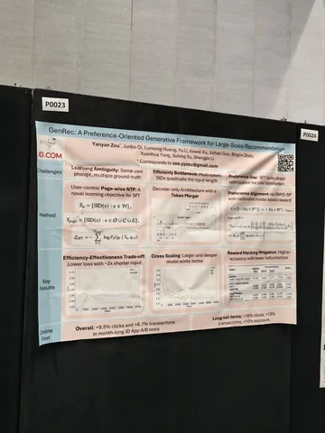
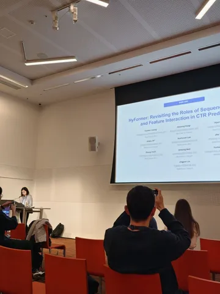
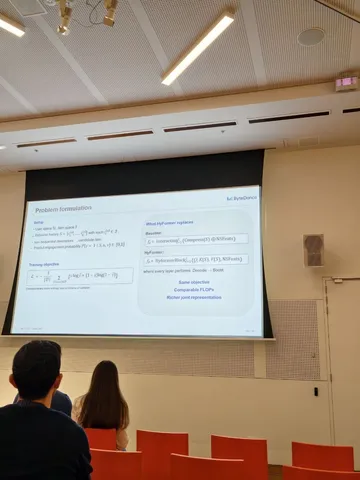
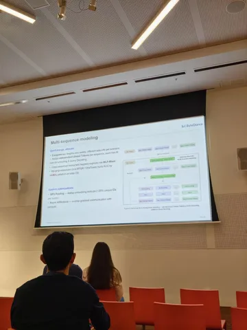
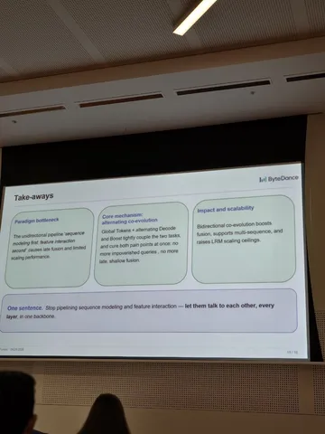
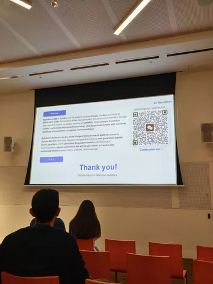
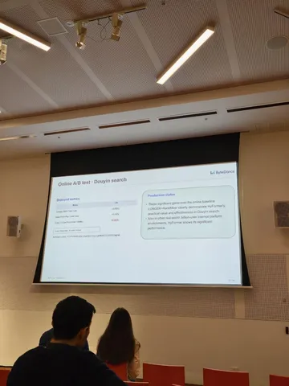

На прошлой неделе в Мельбурне прошла конференция по исследованиям и разработке информационного поиска. Наша коллега Екатерина Дмитриева побывала в Австралии и рассказала о трёх работах, которые отражают основные тренды SIGIR.
Ключевая мысль — генеративный ретривал остаётся очень актуальным направлением в исследованиях, но при этом пока в индустрии не готовы полноценно заменять им всю каскадную систему. Поэтому более классические работы по улучшению ранжирующих моделей всё ещё важны.
HyFormer: Revisiting the Roles of Sequence Modeling and Feature Interaction in CTR Prediction
Одна из таких классических работ. Авторы из ByteDance предлагает CTR-модель, в которой обработка пользовательской истории и ручных фичей объединена в многоуровневой архитектуре.
Основная фишка модели — использование специальных Global Tokens, которые изначально строятся из смеси непоследовательных признаков и агрегированных представлений истории для связи двух источников сигналов.
Эти токены в каждом HyFormer-блоке проходят две стадии:
1) в Query Decoding используются как queries для cross-attention к layer-wise K/V истории;
2) в Query Boosting смешиваются с признаками пользователя, контекста и кандидата через лёгкий MLP-Mixer.
После обеих стадий обновлённые Global Tokens передаются в следующий HyFormer-блок.
В отличие от более устоявшейся архитектуры — как, например, LONGER + RankMixer — HyFormer связывает историю и остальные признаки на всей глубине модели, а не только после её сжатия. По сравнению же с MTGR и OneTrans, она раздельно обрабатывает разные последовательности и использует небольшое число Global Tokens вместо общего дорогого self-attention.
GenRec: A Preference-Oriented Generative Framework for Large-Scale Recommendation
Работа команды JD.com о генеративном кандгене в ленте на главной странице JD App, где decoder-only-модель напрямую генерирует Semantic IDs товаров из всего каталога.
Главная особенность GenRec — Page-wise NTP, при котором вместо обучения на одном следующем товаре модель предсказывает сразу все взаимодействия внутри страницы: заказы, клики и показы товаров. Так авторы борются с проблемой Point-wise NTP, где одному контексту соответствуют несколько разных таргетов, и одновременно получают более плотный обучающий сигнал.
Помимо Page-wise NTP, предложены ещё два улучшения. Token Merger объединяет токены Semantic ID товара в один вектор, примерно вдвое сокращая историю, а к стандартному GRPO добавляется NLL-регуляризация, не позволяя генерации слишком далеко уйти от реальных пользовательских взаимодействий.
OxygenREC: An Instruction-Following Generative Framework for E-commerce Recommendation
Ещё одна работа команды JD.com о генеративных рекомендациях, но уже сразу в нескольких сценариях JD App: от главной и товарных лент до корзины и чекаута.
Работа следует принципу Fast-Slow Thinking: near-line LLM анализирует профиль, контекст, запросы и историю пользователя, формируя кэшируемые Contextual Reasoning Instructions. Во время обучения представления инструкций сближаются с таргетными товарами через Query-to-Item loss, а во время инференса используются для отбора наиболее релевантных событий из долгосрочной истории.
Чтобы одну модель можно было использовать на разных поверхностях, на этапе постобучения MCTS отдельно для каждого сценария исследует последовательности Semantic IDs. А Joint Pareto Optimization совместно обучает общую policy, балансируя цели разных сценариев.
#YaSIGIR26
@RecSysChannel
Интересное увидела






